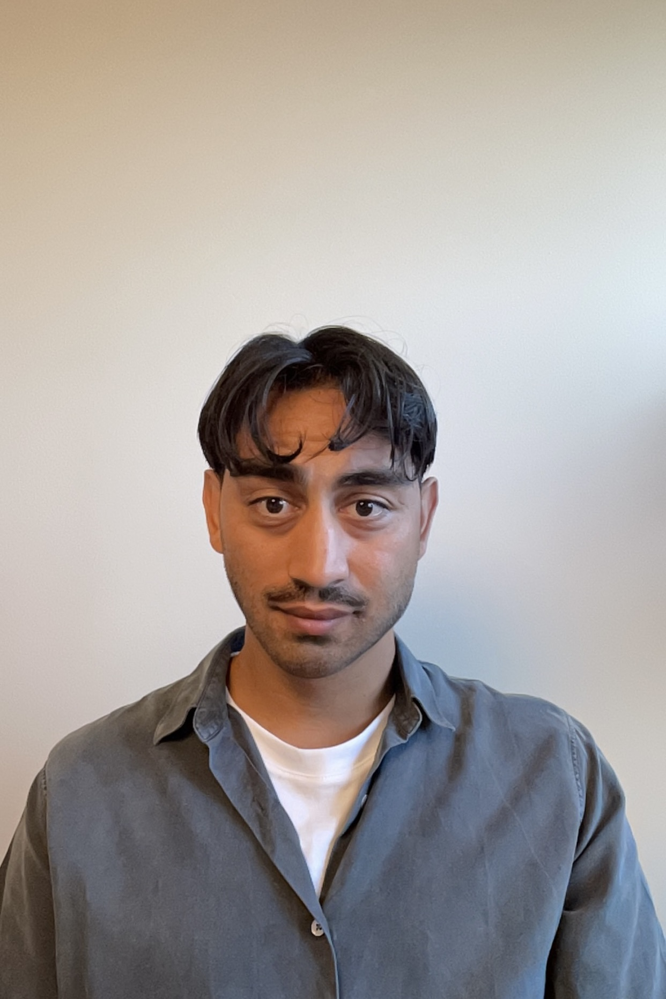

Amin Nazari's Portfolio
Software developer

Profile
Recently graduated software developer with a strong passion for programming and problem-solving.
Previously worked as a professional football player for over 15 years – an experience that has strengthened my ability to collaborate, stay goal-oriented, and remain focused under pressure.
I am curious, dedicated, and enjoy finding solutions both independently and in collaboration with others.
Work experience
- Software Developer – Cervitrol AB, Lund
Programming, testing and troubleshooting of technical systems with both hardware and software.
- Operator – Fields & Lundgrens AB, Malmö
- Professional Football Player
Played at professional level in Sweden and Norway (clubs include Kalmar FF, AIK, Fredrikstad, Sarpsborg, etc.).
Education
- Software Development – Embedded Systems, YH Movant, Malmö
- Science and Social Science Programme – Malmö Borgarskola
Skills
- Git
- Python
- C / C++
- Embedded Systems
- Linux
Languages
- Swedish
- English
- Persian
- Tagalog
Contact